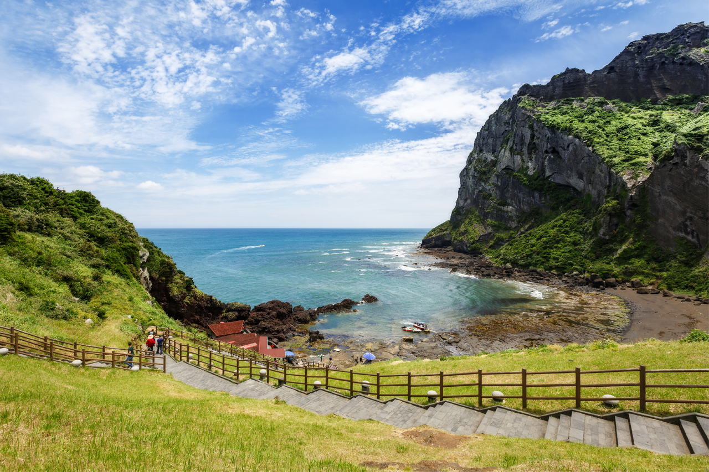
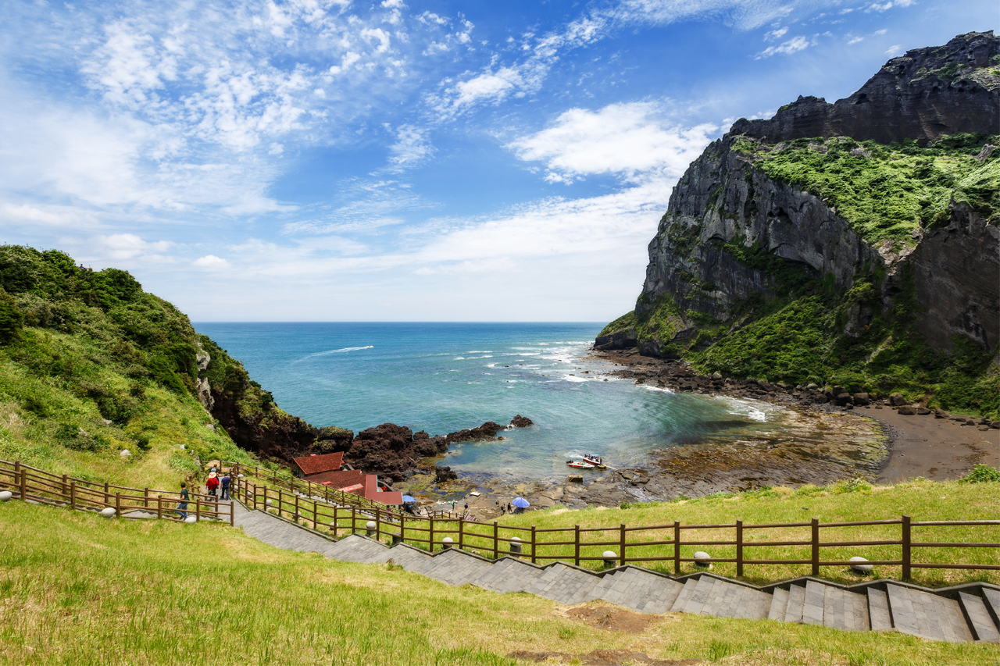

Jeju: 지역 소개

 

제주도는 대한민국의 최남단에 위치한 섬으로, 아름다운 자연 경관과 독특한 문화로 유명합니다. 이 섬은 한국의 대표적인 관광지로, 매년 수많은 국내외 관광객이 방문합니다. 제주도는 화산 활동으로 형성된 섬으로, 한라산을 비롯한 다양한 자연 명소가 있습니다.
기후와 자연
제주도는 온화한 해양성 기후를 가지고 있어 사계절 내내 여행하기 좋습니다. 봄에는 벚꽃과 유채꽃이 만발하고, 여름에는 해변과 바다를 즐길 수 있으며, 가을에는 아름다운 단풍을 감상할 수 있습니다. 겨울에는 한라산의 설경이 장관을 이룹니다.
역사와 문화
제주도는 독특한 역사와 문화를 가지고 있습니다. 제주도 사람들은 독특한 방언을 사용하며, 전통적인 생활 방식과 문화를 유지하고 있습니다. 제주도의 문화는 바다와 밀접한 관련이 있으며, 해녀 문화와 같은 전통적인 생활 방식이 여전히 존재합니다.
음식과 특산물
제주도는 다양한 해산물 요리로 유명합니다. 특히, 제주 흑돼지와 해산물 요리는 많은 관광객들에게 인기를 끌고 있습니다. 또한, 감귤은 제주도의 대표적인 특산물로, 전국적으로 유명합니다.
관광과 레저
제주도는 다양한 관광 명소와 레저 활동을 제공합니다. 아름다운 해변, 수많은 폭포, 그리고 화산 지형을 탐험할 수 있는 다양한 트레킹 코스가 있습니다. 또한, 다양한 테마파크와 박물관이 있어 가족 단위의 여행객들도 즐길 수 있습니다.
제주도는 자연과 문화, 그리고 맛있는 음식이 조화를 이루는 곳으로, 모든 방문객들에게 잊지 못할 경험을 선사합니다.